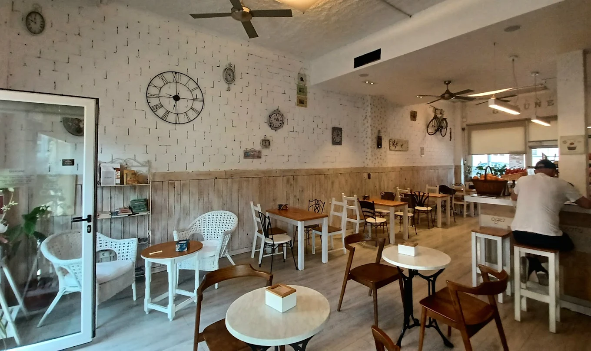
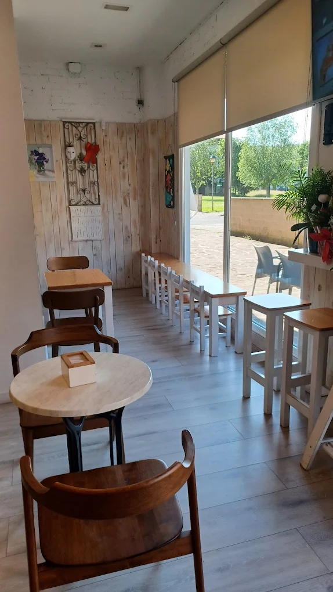
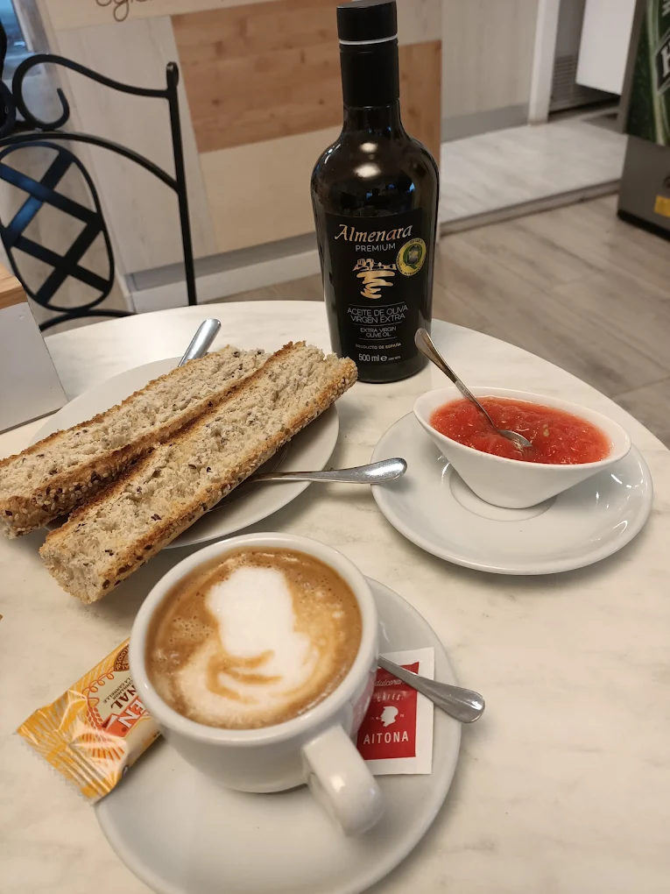
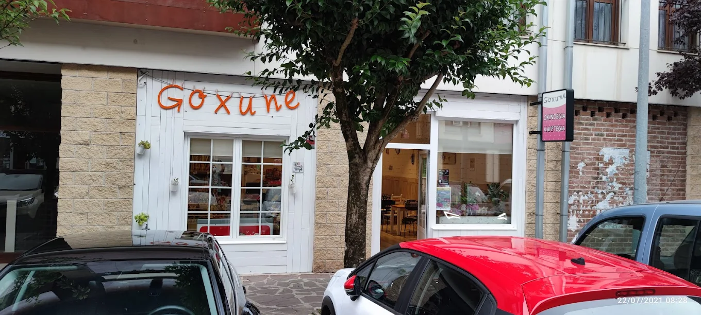
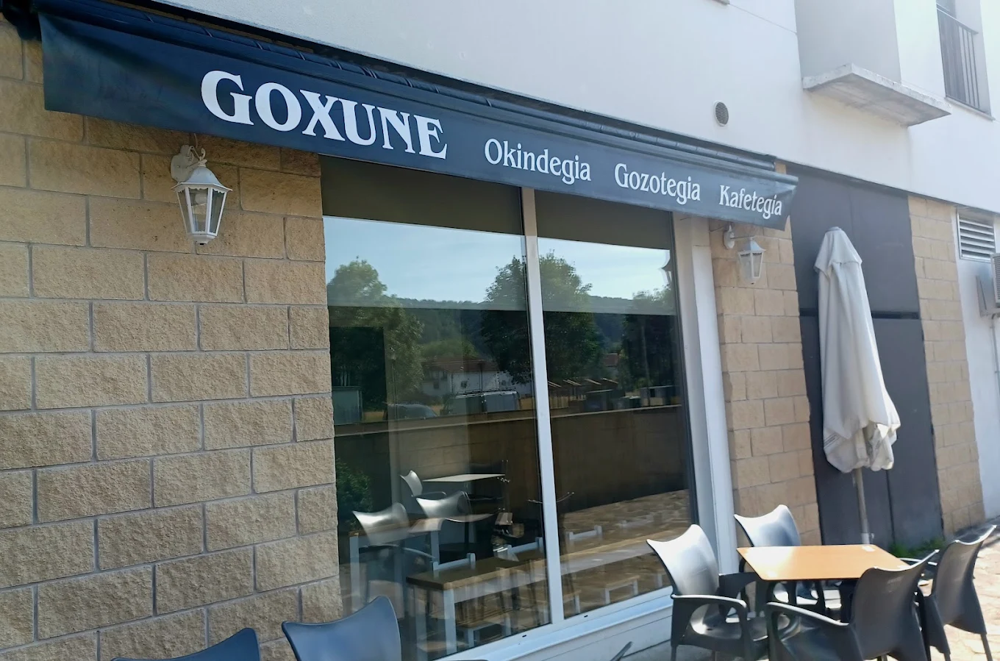
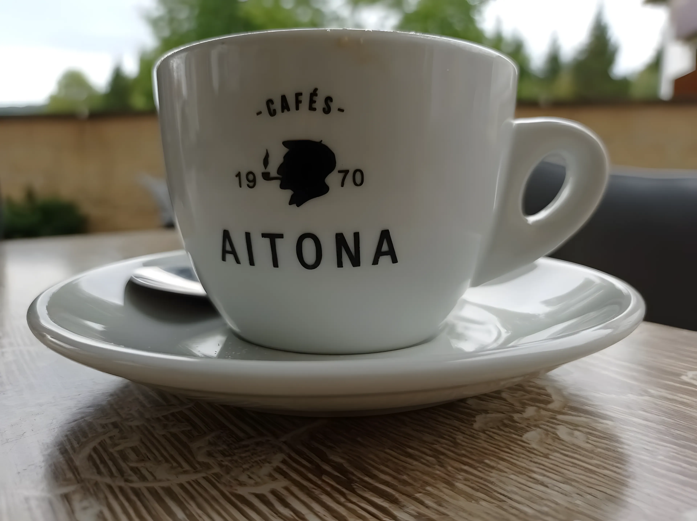

Toujours frais
Pain et pâtisseries cuits chaque jour dans notre fournil.

Un fournil de village où le pain, le café et la convivialité passent avant tout.

Bienvenue chez Goxune
Café, boulangerie, pâtisserie et bar. Un lieu spacieux, une déco agréable et une terrasse. Grande variété de produits. Équipe adorable.
Une décoration pleine de caractère et une atmosphère chaleureuse où l’on se détend aussitôt. Et le service est rapide.

Vous trouverez ici un petit-déjeuner qui recharge les batteries : sandwichs filet-poivrons, tortilla au fromage, tartines et un café au lait dans un lieu à part.
Parking facile et de nombreux sentiers de rando et vélo à proximité. Le point de départ parfait pour une belle journée.
Un café au lait dans un lieu à part.
— Avis Google
Nos valeurs
Pain et pâtisseries cuits chaque jour dans notre fournil.
Une équipe souriante qui vous fait sentir comme chez vous.
De belles portions pour un petit-déjeuner qui recharge les batteries.
Un lieu spacieux, une déco de charme et une terrasse accueillante.



Café fraîchement préparé, pain chaud et un sourire. C’est ainsi que commence la journée chez Goxune.
Itinéraire